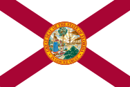
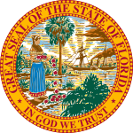
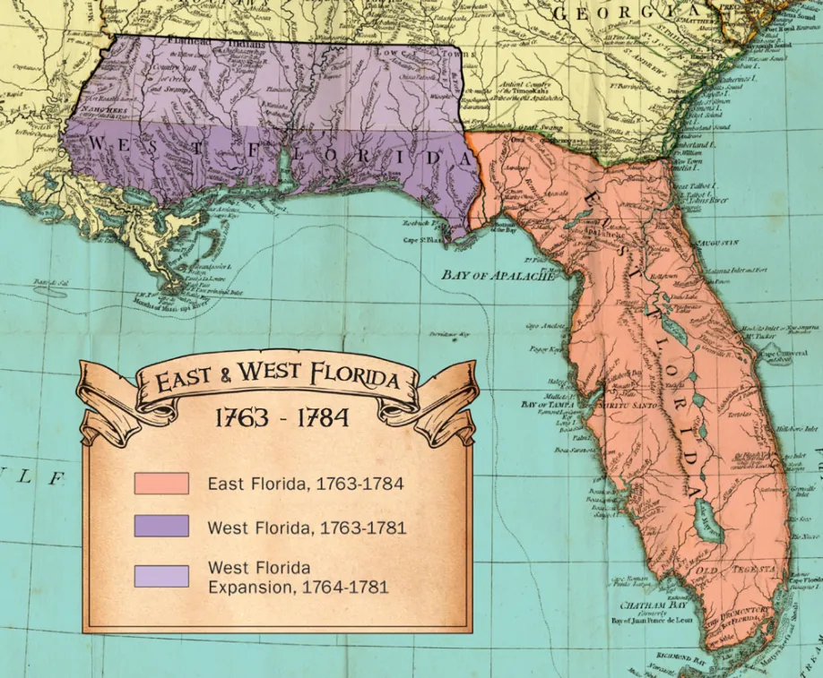
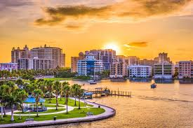
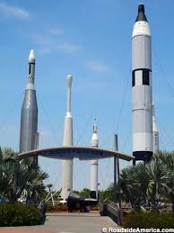

Cities in Florida
Florida is a state in the southeastern region of the United States. With a population of over 21 million, it is the third-most populous state in the United States and ranks eighth in population density as of 2020. Florida spans 65,758 square miles (170,310 km2), ranking 22nd in area among the states.
St. Augustine
Florida became the first area in the continental U.S. to be permanently settled by Europeans, with the settlement of St. Augustine. St. Augustine was founded in 1565 and is the oldest continuously inhabited city. Florida was a Spanish territory frequently attacked and coveted by Great Britain.
Pensacola
At the time of European contact, a Muskogean-speaking tribe known to the Spanish as the Pensacola, lived in the region. This name was not recorded until 1677, but the tribe appears to be the source of the name "Pensacola" for the bay and the city.
Naples
The city is mostly known for its high-priced homes, white-sand beaches, and numerous golf courses. Naples is the self-titled "Golf Capital of the World", as it has the second most holes per capita out of all communities, and the most holes of any city in Florida. The name Naples caught on when promoters described the bay as "surpassing the bay in Naples, Italy".
Sarasota
The area known today as Sarasota appeared on a sheepskin Spanish map from 1763 with the word Zarazote over present-day Sarasota and Bradenton.Around 1883 to 1885, The Florida Mortgage and Investment Company of Edinburgh bought 60,000 acres for development in what is now Sarasota. Many Scottish people began to arrive in Sarasota in December 1885.
Titusville
This community was originally called Sand Point, and a post office was established in 1859, although it closed a few months later. Henry T. Titus arrived in 1867, intending to build a town on land owned by his wife, Mary Hopkins Titus, daughter of a prominent planter from Darien, Georgia.
Suwannee
Located at the southern tip of Dixie County in North Central Florida where the Suwannee River meets the Gulf of Mexico, the tranquil fishing village of Suwannee is known for excellent freshwater and saltwater fishing, boating, and unspoiled natural landscapes. ‘What is a good name of two syllables for a Southern river? We both looked over it and my finger stopped at the ‘Swanee,’ a little river in Florida emptying into the Gulf of Mexico.